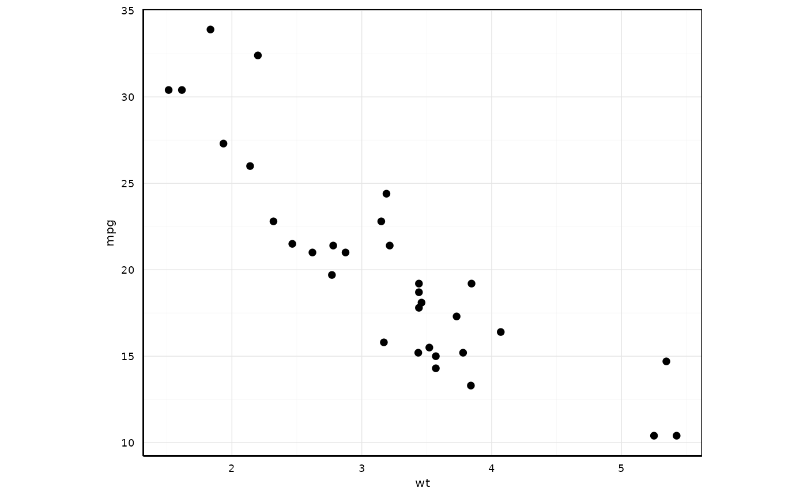

Publication-Ready Theme for Pleiotropy Plots
Source:R/theme_publication.R
theme_pleiotropy_publication.RdCreates a publication-ready ggplot2 theme optimized for scientific journals. Supports multiple journal styles and includes colorblind-friendly palettes.
Usage
theme_pleiotropy_publication(
journal_style = "default",
base_size = 12,
legend_position = "right"
)Examples
library(ggplot2)
p <- ggplot(mtcars, aes(x = wt, y = mpg)) +
geom_point()
p + theme_pleiotropy_publication(journal_style = "nature")
